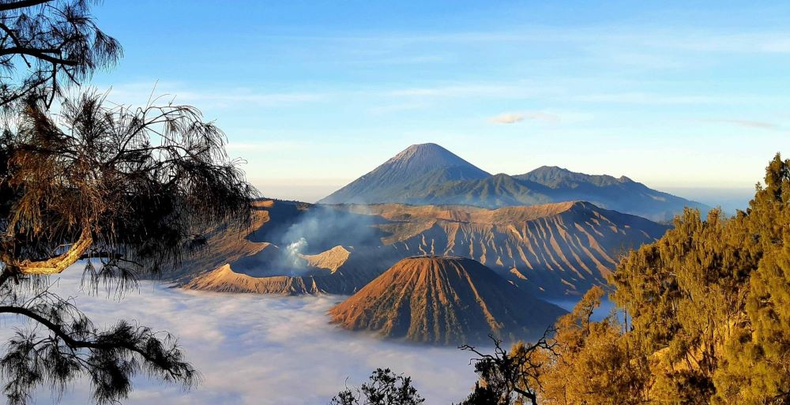

Explore Mount Bromo
Mount Bromo is an active volcano located in East Java, famous for its breathtaking sunrises and surreal landscapes. A must-visit for adventure seekers, you can hike to the crater and enjoy the stunning views.
Tips: Start your journey early to catch the sunrise and bring warm clothing as it can get quite chilly.
Discover Yogyakarta

Yogyakarta, known as Jogja, is the cultural heart of Indonesia. With its rich history and vibrant art scene, it's a great place to explore traditional markets, visit historical sites like the Borobudur and Prambanan temples, and enjoy local cuisine.
Must-Visit: Don't miss the Sultan's Palace and the famous Malioboro street for shopping.
Relax in Bali
Bali is a world-renowned destination known for its stunning beaches, vibrant nightlife, and rich cultural experiences. Whether you're looking to relax on the beach, explore lush rice terraces, or experience traditional Balinese ceremonies, Bali has something for everyone.
Activities: Consider trying surfing, visiting a spa, or exploring the Ubud area for arts and crafts.